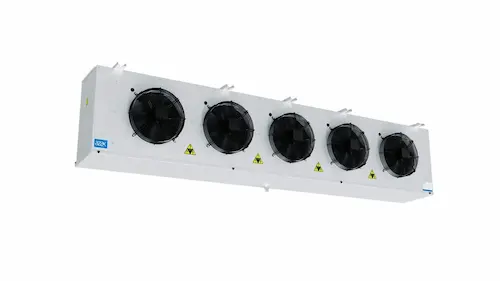

In food cold-storage logistics, wrong evaporator selection can create temperature non-uniformity and product risk. Friga-Bohn units are often selected because of their well-engineered air distribution characteristics.
This article explains with practical criteria why many refrigeration engineers prefer Friga-Bohn and how to size the unit correctly.
Air Throw: The Most Critical Parameter
Air throw is the effective distance cold airflow can travel while maintaining required temperature conditions. Large rooms need sufficient throw to avoid warm zones far from the evaporator.
Typical design target at the end of throw is low but effective air velocity that avoids dehydration and minimizes local cold spots.
Main Friga-Bohn Series and Applications
| Series | Temperature Range | Main Application | Defrost Type |
|---|---|---|---|
| LU / LU-V | 0 C to +10 C | Fruit and vegetable storage | Air off-cycle |
| GHN | -18 C to -5 C | Meat and fish freezing | Electric / hot gas |
| RAE / RAV | -25 C to -15 C | Long-term frozen storage | Electric |
| MHID | -45 C to -30 C | Blast freezing and IQF lines | Hot gas |
| GBC | 0 C to +5 C | Dairy and cheese storage | Air / hot gas |
Understanding TD and Delta-T in Selection
TD is the difference between room air temperature and refrigerant evaporating temperature. Lower TD generally supports higher room humidity, which is essential for many fresh-food applications.
Some Friga-Bohn families are optimized for lower TD operation, helping maintain product-friendly humidity targets.
Defrost Strategy: Cooling vs Freezing Rooms
In freezing rooms, frost accumulation reduces heat-transfer efficiency over time. Friga-Bohn supports multiple defrost approaches depending on operating profile.
1. Hot Gas Defrost
Fast and efficient, often preferred where downtime must be minimized and process continuity is critical.
2. Electric Defrost
Simple to implement for small and medium rooms, but requires careful cycle management to avoid extra thermal disturbance.
3. Air Off-Cycle Defrost
Applicable mostly in higher-temperature rooms where light frost can be cleared without active heating.
Unit Selection by Product Category
| Product Type | Required Temperature | Recommended Series | Target TD | Room Humidity |
|---|---|---|---|---|
| Fresh meat | 0 C to 2 C | LU-V | 5 C | 85% - 90% |
| Fruits and vegetables | 2 C to 8 C | LU-V | 5 - 6 C | 90% - 95% |
| Dairy and cheese | 2 C to 6 C | GBC | 6 - 7 C | 80% - 88% |
| Frozen meat and fish | -18 C | GHN | 5 C | - |
| Long-term freezing | -22 C to -25 C | RAE | 4 - 5 C | - |
Installation and Orientation Best Practices
Even a correctly selected unit underperforms with poor installation. Key practices include:
-
Place evaporators to support full-room airflow coverage.
-
Respect clearance from ceiling and structural obstructions.
-
Ensure proper drain pan slope and reliable defrost-water disposal.
-
Avoid placement directly above high-infiltration door zones.
-
For low-temperature rooms, protect drain lines against freezing.
Periodic Maintenance for Friga-Bohn Evaporators
| Task | Frequency | Priority |
|---|---|---|
| Verify complete defrost cycle performance | Weekly | Critical |
| Check defrost water drainage from pan | Weekly | Critical |
| Clean fan blades from dust and frost deposits | Monthly | Important |
| Measure fan speed and electrical current | Monthly | Important |
| Clean coil fins with low-pressure method | Every 6 months | Important |
| Inspect drain-line heating in low-temp rooms | Annually | Routine |
Need help selecting the right evaporator for your warehouse?
Elfarida Ice can review your thermal load and recommend the correct unit for your application.
Contact Us Now